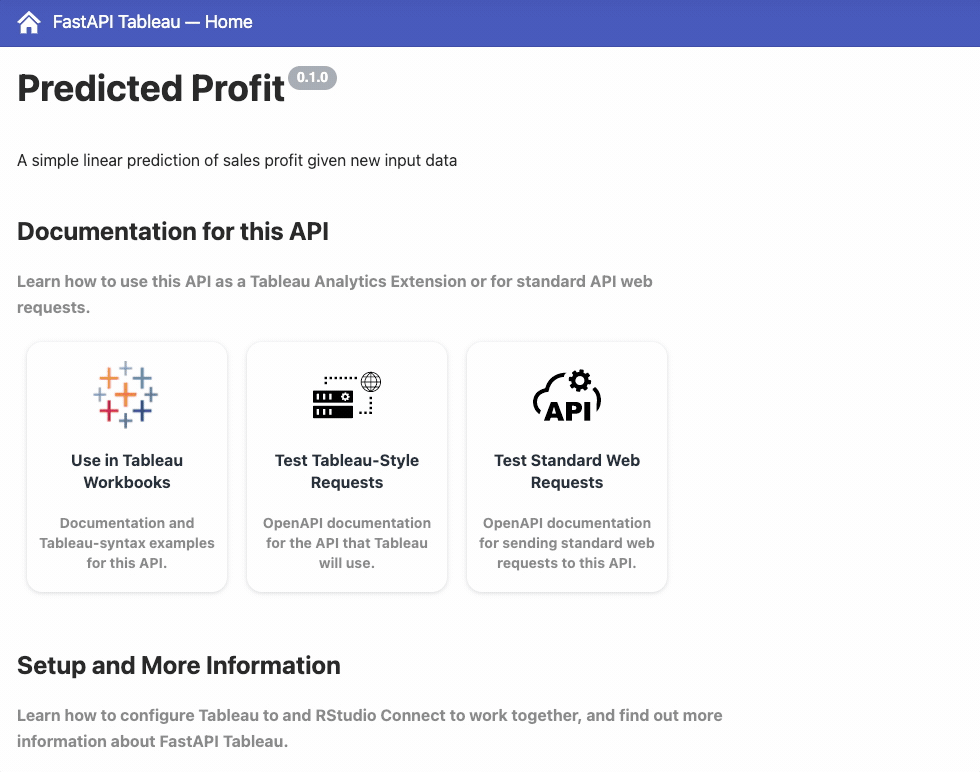

2021-10-12
This edition of RStudio Connect introduces support for Tableau Analytics Extensions, our first external integration with a BI tool. Tableau Analytics Extensions provide a way to create calculated fields in workbooks that can execute scripts outside of the Tableau environment. This RStudio Connect integration enables you to create R or Python HTTP API extensions for use across all your Tableau workbooks.
Compared to existing methods for integrating R and/or Python in Tableau, integration via APIs hosted on RStudio Connect provides better security and dependency management:
Plumber and FastAPI are popular HTTP API generators for R and Python respectively. They can quickly and easily be leveraged to create powerful web APIs that get used by other developers, applications, and systems. Learning one (or both) of these frameworks allows you, a data scientist, to turn your functions into tools. In fact, by writing a function, you may have already created a powerful tool:
One of the best ways to improve your reach as a data scientist is to write functions. - R for Data Science, Chapter 19
In R for Data Science, authors Hadley and Garrett show us that functions are an excellent way to automate common tasks. Functions make code easier to understand and maintain, and reduce the chance of introducing unforced errors. But to truly extend your reach, you need a means for making those functions available to other people and systems. To distribute functions that reach users and consumers outside of your own domain, it’s hard to beat the benefits of building and hosting a web API. We wrote about the many advantages of building APIs in this blog post.
In principle, extending Tableau should be as simple as directing a workbook to reach out to any existing web API, but Tableau Analytic Extensions require special handling to make valid requests and receive results. To simplify this process, RStudio has introduced two new open source libraries which add functionality to Plumber and FastAPI:
plumbertableaufastapitableauThese libraries can be used to create as many extensions as you want to manage. Publishing Tableau extensions to RStudio Connect works just like regular Plumber and FastAPI content, and the new Tableau integration is enabled by default after upgrading Connect to this release. Publishers can learn more in the RStudio Connect User Guide. Administrators should review the full integration and set up instructions upon upgrade.
Extensions hosted on RStudio Connect allow Tableau users to reference extensions without needing to know how the extension was implemented, or even what language the extension is using. plumbertableau and fastapitableau provide documentation for getting started:

RStudio Connect is currently the only platform that allows a single Tableau workbook to use R and Python extensions simultaneously. This solution is different from Tableau’s existing integrations with Rserve and TabPy, both of which require passing R or Python scripts to an external language interpreter. By using plumbertableau and/or fastapitableau, all of the logic for the extension is contained in the API hosted on Connect. As shown in the documented example above, this should help simplify setup and usage in Tableau.
In addition to the documentation sites for plumbertableau and fastapitableau, we have added a new chapter to RStudio Connect User Guide, and deployable Jump Start extension examples that build on Tableau’s “Superstore” example dataset.
To learn more about Tableau Analytics Extensions, visit the documentation site maintained by Tableau.
To learn more about how RStudio Team can be positioned in relation to traditional BI tooling, take a look at our Data Science Leadership article.
RStudio also has a new experimental package called shinytableau and we’d love to get your feedback on it. shinytableau makes use of a new extensibility feature in Tableau called Dashboard Extensions. This feature lets programmers use JavaScript to create custom objects that Tableau users can drop into their dashboard layouts, providing custom visualizations and interactive features beyond Tableau’s native capabilities. The shinytableau package is a bridge between the JavaScript-based Tableau Dashboard Extension API, and Shiny code that you as an R practitioner will write.
To get started:
Important: Support for Ubuntu 16.04 LTS will be removed in the next RStudio Connect release. Please review our Platform Support page for information on which vendor operating systems are supported. Operating system server migrations can take time and planning. Server migration instructions can be found in the Admin Guide.
New Features of Note:
Server.ViewerKiosk will now take effect on content permission requests in addition to its existing role request behavior. When enabled, users with a “viewer” role will not be allowed to request access to individual content items or elevated role privileges.LDAP Authentication Updates:
Additional updates are described in the full release notes.
Upgrade Planning
Upgrading RStudio Connect should require less than five minutes. If you are upgrading from a version earlier than 2021.08.2, be sure to consult the release notes for the intermediate releases, as well. As noted above, support for Ubuntu 16.04 LTS will be removed in an upcoming release. We recommend starting migration planning as soon as possible.
To perform an RStudio Connect upgrade, download and run the installation script. The script installs a new version of Connect on top of the earlier one. Existing configuration settings are respected.
# Download the installation script
curl -Lo rsc-installer.sh https://cdn.rstudio.com/connect/installer/installer-v1.9.4.sh
# Run the installation script
sudo bash ./rsc-installer.sh 2021.09.0